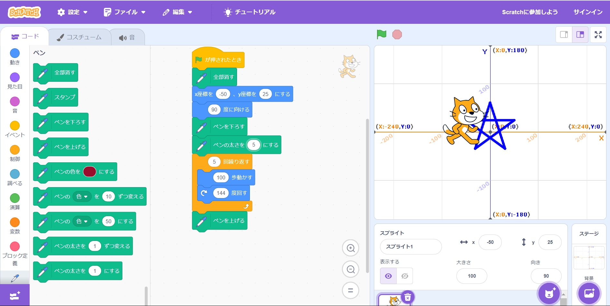
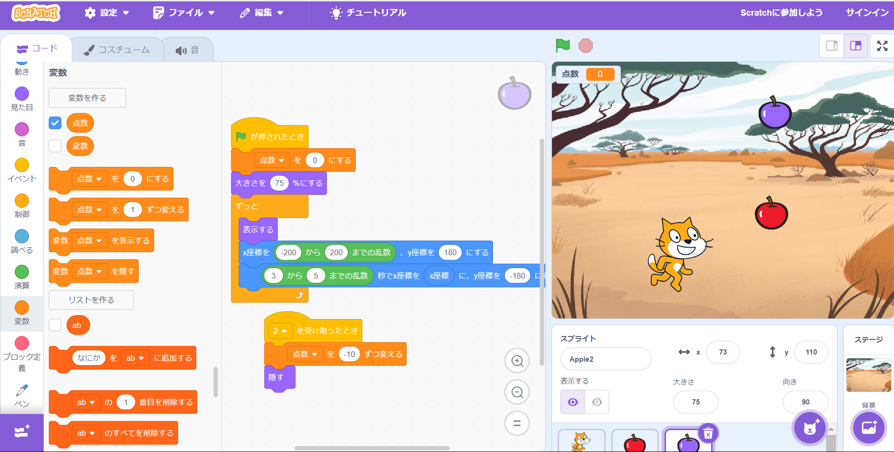

1週目のレポート ： 公大高専１年実習I-1
2b班40番
kake
第1週目
1-1 サイエンスアート

1.内容
スクラッチを使って線を書くプログラムを利用して円を描くものを作りました。
また、自分で元のものから作り変えるときは星の形が作成されるものを作りました。
2.感想
ほとんど初めてのスクラッチだったので操作が難しかったですが、うまくプログラムを組むことができたと思います。
1-2 ゲーム

1.内容
猫のキャラクターを操作して、落下してくるリンゴを集めるゲームを作成しました。
また、自分で作るときはもう一つリンゴを出してそのリンゴに当たると得点が減るようにしました。
2.感想
スクラッチに段々慣れてきて言っていたので一つ目の課題よりもうまくできたと思います。
またスクラッチを扱う時があればその時はもっと良いものを作りたいと思いました。
1-3 ホームページ作成
私のホームページ
1.内容
ホームページの作成実習
2.感想
小さいときに少しhtmlに触れたことがあったので久しぶりにすることができて楽しかったです。
スクラッチなどとは違って文字だけで作っていく感じなので前半より楽しかったです。
各ページへのリンク
1週目のレポート
2週目のレポート
3週目のレポート
私のホームページ